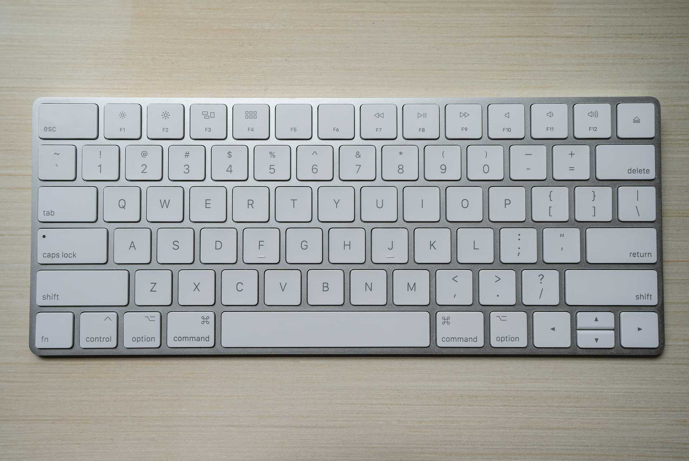
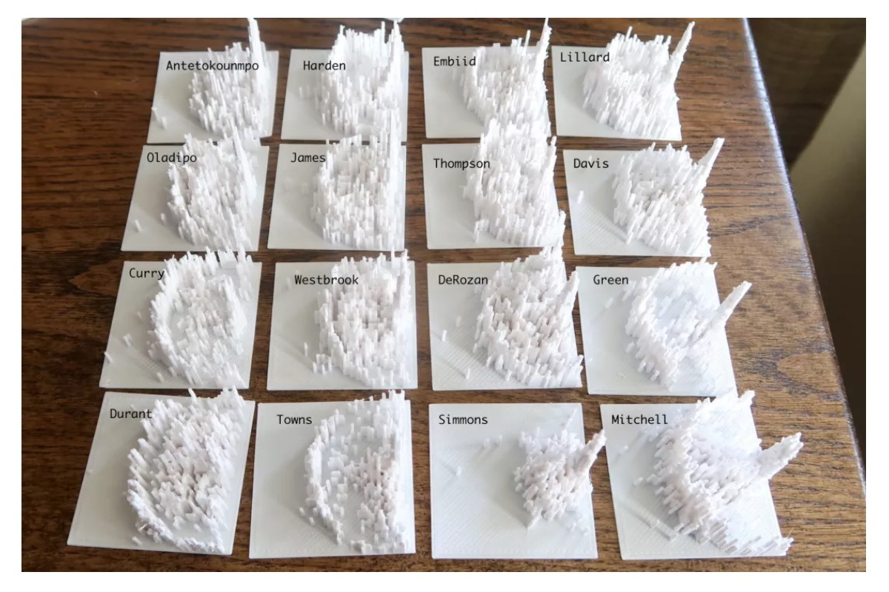
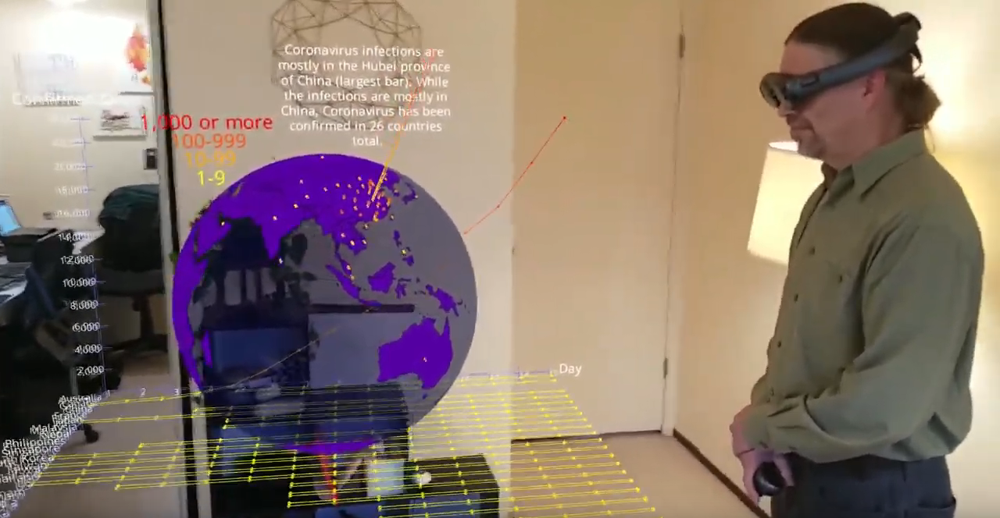
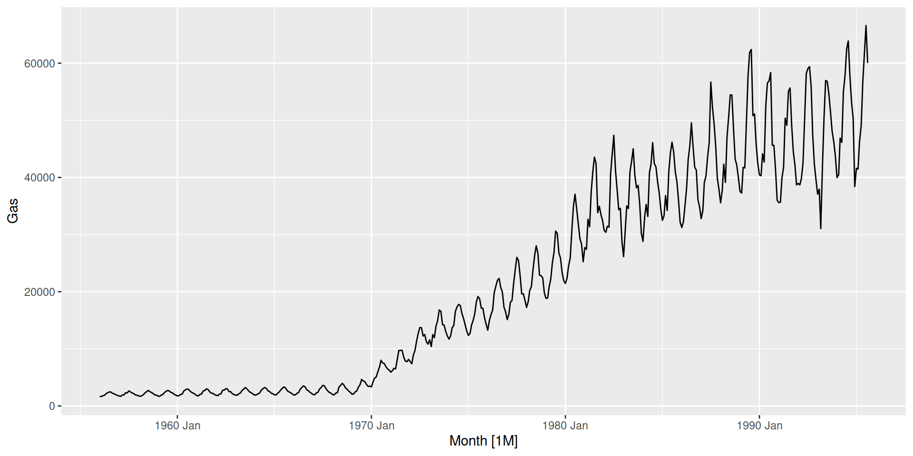

Point Forecast Lo 80 Hi 80 Lo 95 Hi 95
Sep 1995 54402.25 51048.79 57976.01 49358.08 59961.91
Oct 1995 51192.44 47378.89 55312.94 45476.50 57626.82
Nov 1995 47063.77 43016.54 51491.80 41016.91 54002.09
Dec 1995 43478.22 39276.32 48129.64 37218.95 50790.14
Jan 1996 41047.88 36667.76 45951.22 34541.57 48779.74
Feb 1996 41756.41 36898.20 47254.28 34559.59 50451.92
Mar 1996 46075.15 40285.14 52697.34 37520.72 56579.93
Apr 1996 47375.09 40992.12 54751.97 37969.05 59111.28
May 1996 56195.68 48125.87 65618.65 44334.23 71230.61
Jun 1996 60656.06 51417.55 71554.51 47111.01 78095.50
Jul 1996 65241.81 54745.43 77750.66 49890.93 85315.98
Aug 1996 62433.85 51860.88 75162.36 47009.24 82919.57
Sep 1996 55436.79 45584.78 67418.06 41099.36 74775.79
Oct 1996 52165.94 42462.98 64086.06 38080.04 71462.24
Nov 1996 47958.76 38644.40 59518.14 34470.03 66725.86
Dec 1996 44305.02 35339.13 55545.64 31352.59 62608.36
Jan 1997 41828.46 33025.16 52978.42 29141.87 60038.03
Feb 1997 42550.47 33252.94 54447.59 29184.23 62038.37
Mar 1997 46951.34 36316.72 60700.09 31700.06 69540.18
Apr 1997 48275.99 36957.36 63061.09 32083.24 72641.40
May 1997 57264.32 43385.17 75583.48 37456.73 87546.42
Jun 1997 61809.52 46342.02 82439.58 39788.85 96017.26
Jul 1997 66482.47 49324.51 89608.98 42114.65 104949.67
Aug 1997 63621.12 46705.24 86663.67 39655.68 102069.78
Sep 1997 56491.00 41032.03 77774.19 34643.11 92117.37
Oct 1997 53157.94 38199.97 73973.02 32069.78 88113.08
Nov 1997 48870.76 34742.83 68743.72 29001.56 82352.51
Dec 1997 45147.54 31749.80 64198.84 26351.44 77350.63
Jan 1998 42623.89 29649.68 61275.41 24466.62 74256.11
Feb 1998 43359.62 29831.91 63021.68 24474.24 76817.78
Mar 1998 47844.18 32555.30 70313.16 26552.62 86208.67
Apr 1998 49194.03 33103.20 73106.31 26840.84 90163.05
May 1998 58353.28 38828.95 87695.01 31297.19 108799.06
Jun 1998 62984.92 41440.73 95729.48 33203.47 119478.46
Jul 1998 67746.73 44070.41 104142.87 35098.80 130762.85
Aug 1998 64830.97 41694.29 100806.48 33006.05 127341.94
Sep 1998 57565.25 36597.91 90545.01 28795.69 115078.29
Oct 1998 54168.82 34041.98 86195.35 26620.92 110223.86
Nov 1998 49800.11 30933.75 80172.98 24041.44 103157.34
Dec 1998 46006.08 28243.68 74939.23 21814.81 97023.98
Jan 1999 43434.44 26351.85 71590.83 20226.75 93270.11
Feb 1999 44184.17 26489.97 73697.35 20205.23 96620.58
Mar 1999 48754.01 28882.19 82298.24 21890.83 108582.13
Apr 1999 50129.52 29341.71 85644.94 22097.85 113720.04
May 1999 59462.95 34385.67 102828.94 25731.04 137415.45
Jun 1999 64182.66 36665.30 112351.85 27260.43 151113.30
Jul 1999 69035.03 38956.57 122337.15 28776.54 165615.27
Aug 1999 66063.82 36822.72 118525.42 27023.21 161506.66
Sep 1999 58659.93 32292.49 106556.90 23543.35 146155.43
Oct 1999 55198.91 30010.03 101530.06 21735.10 140184.30
Nov 1999 50747.13 27245.25 94521.84 19601.87 131378.84
Dec 1999 46880.95 24853.46 88431.31 17761.84 123738.53
Jan 2000 44260.41 23167.79 84556.35 16446.10 119115.39
Feb 2000 45024.39 23268.25 87122.83 16405.98 123564.41
Mar 2000 49681.13 25346.73 97378.04 17750.22 139052.62
Apr 2000 51082.80 25726.92 101428.88 17893.53 145832.19
May 2000 60593.72 30122.54 121888.77 20806.99 176459.88
Jun 2000 65403.19 32090.90 133295.63 22013.66 194314.64
Jul 2000 70347.83 34066.00 145271.45 23206.38 213252.41
Aug 2000 67320.11 32171.49 140870.00 21762.90 208244.20
Sep 2000 59775.44 28188.57 126757.15 18934.81 188705.47
Oct 2000 56248.60 26173.10 120883.82 17456.99 181240.03
Nov 2000 51712.15 23740.96 112638.55 15722.51 170083.99
Dec 2000 47772.46 21637.85 105472.94 14227.57 160407.37
Jan 2001 45102.08 20152.70 100939.24 13156.09 154620.31
Feb 2001 45880.59 20222.50 104093.41 13106.56 160608.79
Mar 2001 50625.89 22009.84 116447.02 14161.69 180979.88
Apr 2001 52054.22 22320.71 121395.82 14257.20 190054.29
May 2001 61745.99 26111.89 146008.86 16556.80 230272.09
Jun 2001 66646.92 27794.36 159809.81 17494.05 253904.13
Jul 2001 71685.59 29479.85 174316.46 18417.84 279013.36
Aug 2001 68600.30 27816.73 169178.78 17249.77 272815.26The design of statistical software
Mitchell O’Hara-Wild
Materials are available on GitHub
Background images from unsplash.com contributors
This presentation is biased
opinionated! 😇
These opinions are shaped by my experiences.
So, who am I?
I like to…
🛠️ Make things 🛠️
🍄🌱Grow food 🍯🥚
📝 Design systems 🎨
💻 Write code 💻
📈 Utilise data 📊
I’m most experienced in designing R packages.
There are many talented users and developers of statistical software here, please share your opinions at any time!
My data analytics experience in R is just a small part of the statistical software ecosystem.
R is a tiny part of the statistical software landscape.
I’m most experienced in using R and designing R packages.
I will explore statistical software design with increasing specificity toward this very specific area I’m most familiar with.
So yes, this talk is also biased 🙃
The design of statistical software
⚠️ This talk is not about writing good code! ⚠️
(watch Jenny Bryan’s presentation for this.)
✅ It’s about designing good (coding) interfaces ✅
Designing user interfaces
The inputs and outputs for users of statistical software
🌠 Your turn! 🌠
What should be considered when designing a UI for data?
User interface design varies by…
User
Device
Domain
Language
Developer
Intended users
Are you designing for a technical user or not?
Which tools do you are your intended users familiar with?
User interface design varies by…
User
Device
Domain
Language
Developer
Input devices


Output devices



User interface design varies by…
User
Device
Domain
Language
Developer
Designing software for the domain
Data exploration
Math and probability
Bioinformatics
AI modelling
Time series
User interface design varies by…
User
Device
Domain
Language
Developer
Design variation by language
Syntax
Paradigm
Community
Case study:
Developed by Facebook for R and Python users.
Case study: Prophet for Python
Case study: Prophet for Python
Case study: Prophet for Python
# load software
import pandas as pd
from prophet import Prophet
# data requires time in 'ds' and response in 'y' columns
df = pd.read_csv('https://raw.githubusercontent.com/facebook/prophet/main/examples/example_wp_log_peyton_manning.csv')
# specify and estimate model
m = Prophet()
m.fit(df)
# produce forecasts
future = m.make_future_dataframe(periods=365)
forecast = m.predict(future)Case study: Prophet for Python
# load software
import pandas as pd
from prophet import Prophet
# data requires time in 'ds' and response in 'y' columns
df = pd.read_csv('https://raw.githubusercontent.com/facebook/prophet/main/examples/example_wp_log_peyton_manning.csv')
# specify and estimate model
m = Prophet()
m.fit(df)
# produce forecasts
future = m.make_future_dataframe(periods=365)
forecast = m.predict(future)
# plot results
fig1 = m.plot(forecast)
fig2 = m.plot_components(forecast)Case study: Prophet for R
Case study: Prophet for R
# load software
library(prophet)
# data requires time in 'ds' and response in 'y' columns
df <- read.csv('https://raw.githubusercontent.com/facebook/prophet/main/examples/example_wp_log_peyton_manning.csv')
# specify and estimate model
m <- prophet()
m <- fit.prophet(m, df)(this is slightly changed from the current documentation)
Case study: Prophet for R
# load software
library(prophet)
# data requires time in 'ds' and response in 'y' columns
df <- read.csv('https://raw.githubusercontent.com/facebook/prophet/main/examples/example_wp_log_peyton_manning.csv')
# specify and estimate model
m <- prophet()
m <- fit.prophet(m, df)
# produce forecasts
future <- make_future_dataframe(m, periods = 365)
forecast <- predict(m, future)Case study: Prophet for R
# load software
library(prophet)
# data requires time in 'ds' and response in 'y' columns
df <- read.csv('https://raw.githubusercontent.com/facebook/prophet/main/examples/example_wp_log_peyton_manning.csv')
# specify and estimate model
m <- prophet()
m <- fit.prophet(m, df)
# produce forecasts
future <- make_future_dataframe(m, periods = 365)
forecast <- predict(m, future)
# plot results
plot(m, forecast)
prophet_plot_components(m, forecast)Case study: Prophet
Pros:
✅ Very similar interface, easy to switch languages.
✅ Easy to learn the few functions which produce forecasts.
Cons:
❌ Doesn’t follow some R design themes.
❌ Linear code flow makes non-standard analysis hard.
User interface design varies by…
User
Device
Domain
Language
Developer
Design variations by author / group
base R, tidy R, bioconductor
dplyr, ggplot2, shiny
functions or grammars
Designs from the forecast package
That I re-designed for fable
Case study:
Forecasting Australian gas production
Patterns of good software design
Simple and intuitive
Flexible
Consistent
Accessible
Provides feedback
Simple and intuitive
Simple and intuitive
Jan Feb Mar Apr May Jun Jul
1995
1996 41047.88 41756.41 46075.15 47375.09 56195.68 60656.06 65241.81
1997 41828.46 42550.47 46951.34 48275.99 57264.32 61809.52 66482.47
1998 42623.89 43359.62 47844.18 49194.03 58353.28 62984.92 67746.73
1999 43434.44 44184.17 48754.01 50129.52 59462.95 64182.66 69035.03
2000 44260.41 45024.39 49681.13 51082.80 60593.72 65403.19 70347.83
2001 45102.08 45880.59 50625.89 52054.22 61745.99 66646.92 71685.59
Aug Sep Oct Nov Dec
1995 54402.25 51192.44 47063.77 43478.22
1996 62433.85 55436.79 52165.94 47958.76 44305.02
1997 63621.12 56491.00 53157.94 48870.76 45147.54
1998 64830.97 57565.25 54168.82 49800.11 46006.08
1999 66063.82 58659.93 55198.91 50747.13 46880.95
2000 67320.11 59775.44 56248.60 51712.15 47772.46
2001 68600.30 Simple and intuitive
library(forecast)
fit <- ets(gas, lambda = 0, model = "AAA")
forecast(fit, h = 72, biasadj = TRUE)$mean Jan Feb Mar Apr May Jun Jul
1995
1996 41207.00 41950.90 46328.12 47677.14 56606.81 61160.26 65852.91
1997 42539.55 43337.88 47894.20 49325.06 58607.38 63370.38 68286.09
1998 44333.42 45205.53 50003.27 51544.27 61301.07 66345.36 71560.00
1999 46736.43 47704.84 52822.61 54507.49 64893.59 70308.14 75915.41
2000 49906.68 50997.28 56531.09 58399.36 69604.81 75496.99 81609.60
2001 54013.01 55255.26 61319.70 63417.01 75669.48 82166.24 88917.18
Aug Sep Oct Nov Dec
1995 54469.30 51285.84 47179.62 43614.95
1996 63088.20 56082.95 52838.55 48639.58 44994.59
1997 65471.53 58249.08 54924.93 50602.89 46851.03
1998 68676.73 61160.40 57727.09 53237.67 49340.20
1999 72935.13 65023.12 61439.85 56723.76 52628.92
2000 78493.91 70057.60 66271.37 61253.24 56895.33
2001 85616.84 Simple and intuitive
library(fable)
gas_tsbl |>
model(ets = ETS(log(Gas) ~ error("A") + trend("A") + season("A"))) |>
forecast(h = "6 years")# A fable: 72 x 4 [1M]
# Key: .model [1]
.model Month Gas .mean
<chr> <mth> <dist> <dbl>
1 ets 1995 Sep t(N(11, 0.0025)) 54469.
2 ets 1995 Oct t(N(11, 0.0036)) 51286.
3 ets 1995 Nov t(N(11, 0.0049)) 47180.
4 ets 1995 Dec t(N(11, 0.0063)) 43615.
5 ets 1996 Jan t(N(11, 0.0078)) 41207.
6 ets 1996 Feb t(N(11, 0.0093)) 41951.
7 ets 1996 Mar t(N(11, 0.011)) 46328.
8 ets 1996 Apr t(N(11, 0.013)) 47677.
9 ets 1996 May t(N(11, 0.015)) 56607.
10 ets 1996 Jun t(N(11, 0.017)) 61160.
# ℹ 62 more rowsSimple and intuitive
library(fable)
gas_tsbl |>
model(ets = ETS(log(Gas) ~ error("A") + trend("A") + season("A"))) |>
forecast(h = "6 years") |>
dplyr::mutate(mean(Gas), median(Gas))# A fable: 72 x 6 [1M]
# Key: .model [1]
.model Month Gas .mean `mean(Gas)` `median(Gas)`
<chr> <mth> <dist> <dbl> <dbl> <dbl>
1 ets 1995 Sep t(N(11, 0.0025)) 54469. 54469. 54402.
2 ets 1995 Oct t(N(11, 0.0036)) 51286. 51286. 51192.
3 ets 1995 Nov t(N(11, 0.0049)) 47180. 47180. 47064.
4 ets 1995 Dec t(N(11, 0.0063)) 43615. 43615. 43478.
5 ets 1996 Jan t(N(11, 0.0078)) 41207. 41207. 41048.
6 ets 1996 Feb t(N(11, 0.0093)) 41951. 41951. 41756.
7 ets 1996 Mar t(N(11, 0.011)) 46328. 46328. 46075.
8 ets 1996 Apr t(N(11, 0.013)) 47677. 47677. 47375.
9 ets 1996 May t(N(11, 0.015)) 56607. 56607. 56196.
10 ets 1996 Jun t(N(11, 0.017)) 61160. 61160. 60656.
# ℹ 62 more rowsPatterns of good software design
Simple and intuitive
Flexible
Consistent
Accessible
Provides feedback
Flexible
library(forecast)
fit <- ets(gas + 1, lambda = 0, model = "AAA")
forecast(fit, h = 72, biasadj = TRUE) Point Forecast Lo 80 Hi 80 Lo 95 Hi 95
Sep 1995 54475.15 51055.26 57981.19 49364.83 59966.68
Oct 1995 51261.05 47358.13 55283.92 45457.62 57595.26
Nov 1995 47181.20 43022.32 51488.87 41024.49 53996.29
Dec 1995 43633.85 39300.36 48142.88 37245.05 50799.58
Jan 1996 41227.27 36695.92 45962.76 34572.82 48785.31
Feb 1996 41998.48 36954.46 47292.00 34618.93 50482.50
Mar 1996 46378.38 40349.81 52731.21 37590.51 56601.90
Apr 1996 47710.57 41048.10 54759.84 38033.19 59100.68
May 1996 56633.31 48187.98 65604.66 44409.12 71187.09
Jun 1996 61192.19 51495.50 71533.67 47204.99 78035.43
Jul 1996 65883.68 54835.51 77712.95 50001.20 85226.55
Aug 1996 63100.73 51942.46 75094.80 47114.00 82790.87
Sep 1996 56105.94 45675.65 67361.49 41212.17 74657.08
Oct 1996 52827.38 42530.57 63982.46 38173.06 71286.16
Nov 1996 48652.91 38733.68 59441.14 34582.62 66576.04
Dec 1996 45023.42 35442.38 55484.87 31477.60 62473.49
Jan 1997 42567.84 33130.87 52912.69 29269.51 59893.16
Feb 1997 43393.00 33388.47 54403.50 29341.04 61908.16
Mar 1997 47950.96 36471.66 60634.87 31880.28 69367.48
Apr 1997 49362.69 37110.05 62955.33 32265.30 72408.29
May 1997 58636.11 43565.52 75422.20 37675.05 87214.42
Jun 1997 63402.26 46549.63 82249.31 40038.90 95623.88
Jul 1997 68313.82 49556.51 89376.51 42394.46 104475.62
Aug 1997 65477.69 46925.75 86395.28 39925.38 101543.50
Sep 1997 58264.27 41246.66 77531.18 34901.35 91626.91
Oct 1997 54902.63 38387.64 73678.28 32303.29 87555.66
Nov 1997 50604.53 34941.45 68486.31 29240.42 81839.14
Dec 1997 46867.47 31953.35 63966.09 26590.82 76866.02
Jan 1998 44347.88 29850.41 61039.52 24701.50 73762.92
Feb 1998 45245.44 30062.36 62801.36 24736.51 76322.68
Mar 1998 50040.52 32815.47 70043.55 26848.55 85610.27
Apr 1998 51558.25 33365.70 72776.73 27142.74 89462.08
May 1998 61297.74 39140.65 87253.51 31657.53 107878.26
Jun 1998 66339.04 41789.76 95224.23 33604.56 118418.35
Jul 1998 71542.34 44454.52 103556.39 35539.21 129534.37
Aug 1998 68634.57 42061.26 100181.52 33428.86 126051.62
Sep 1998 61129.60 36941.20 89975.24 29186.43 113881.46
Oct 1998 57656.27 34352.66 85573.51 26980.20 108956.84
Nov 1998 53192.63 31243.02 79608.69 24391.38 101971.10
Dec 1998 49311.30 28547.53 74416.00 22153.08 95896.05
Jan 1999 46705.15 26646.50 71070.59 20552.83 92142.18
Feb 1999 47696.61 26813.20 73183.34 20555.57 95462.17
Mar 1999 52803.07 29244.09 81691.60 22281.90 107216.93
Apr 1999 54458.25 29709.29 84951.14 22496.92 112185.93
May 1999 64809.94 34821.84 101936.09 26204.92 135455.55
Jun 1999 70210.37 37147.05 111342.71 27780.46 148883.50
Jul 1999 75793.71 39482.13 121188.38 29341.58 163071.50
Aug 1999 72787.00 37324.75 117338.84 27563.30 158894.00
Sep 1999 64894.23 32753.32 105474.47 24033.91 143740.20
Oct 1999 61269.91 30432.28 100400.05 22188.22 137703.81
Nov 1999 56584.92 27653.94 93481.38 20033.08 129043.01
Dec 1999 52510.53 25246.60 87458.24 18171.05 121513.25
Jan 2000 49787.17 23545.35 83597.58 16836.53 116908.55
Feb 2000 50897.30 23672.54 86155.86 16816.92 121278.32
Mar 2000 56405.65 25796.81 96253.88 18205.64 136388.70
Apr 2000 58235.09 26185.01 100179.20 18357.55 142894.51
May 2000 69377.97 30665.16 120310.39 21355.69 172756.69
Jun 2000 75238.69 32685.26 131523.35 22610.52 190127.22
Jul 2000 81308.15 34710.69 143273.91 23850.43 208513.46
Aug 2000 78165.72 32786.53 138839.19 22376.24 203432.53
Sep 2000 69763.91 28746.88 124905.25 19486.11 184266.52
Oct 2000 65937.79 26687.50 118995.18 17966.74 176753.46
Nov 2000 60960.78 24230.89 110887.24 16201.02 165847.38
Dec 2000 56631.60 22103.21 103828.64 14676.56 156368.14
Jan 2001 53751.71 20596.75 99327.38 13581.51 150632.85
Feb 2001 55008.73 20690.96 102451.37 13548.61 156460.10
Mar 2001 61026.84 22529.18 114553.33 14649.03 176174.92
Apr 2001 63073.04 22849.50 119322.51 14752.80 184809.65
May 2001 75221.22 26737.15 143417.47 17140.82 223710.10
Jun 2001 81661.75 28475.34 156911.48 18125.45 246510.12
Jul 2001 88342.35 30215.41 171068.74 19095.75 270683.91
Aug 2001 85017.27 28517.42 165907.52 17893.34 264414.17Flexible
library(fable)
gas_tsbl |>
model(ets = ETS(log(Gas + 1) ~ error("A") + trend("A") + season("A"))) |>
forecast(h = "6 years")# A fable: 72 x 4 [1M]
# Key: .model [1]
.model Month Gas .mean
<chr> <mth> <dist> <dbl>
1 ets 1995 Sep t(N(11, 0.0025)) 54474.
2 ets 1995 Oct t(N(11, 0.0036)) 51260.
3 ets 1995 Nov t(N(11, 0.0049)) 47180.
4 ets 1995 Dec t(N(11, 0.0063)) 43633.
5 ets 1996 Jan t(N(11, 0.0077)) 41226.
6 ets 1996 Feb t(N(11, 0.0093)) 41997.
7 ets 1996 Mar t(N(11, 0.011)) 46377.
8 ets 1996 Apr t(N(11, 0.013)) 47710.
9 ets 1996 May t(N(11, 0.014)) 56632.
10 ets 1996 Jun t(N(11, 0.016)) 61191.
# ℹ 62 more rowsPatterns of good software design
Simple and intuitive
Flexible
Consistent
Accessible
Provides feedback
Consistent
library(forecast)
fit_ets <- ets(gas + 1, lambda = 0, model = "AAA")
fc_ets <- forecast(fit_ets, h = 72, biasadj = TRUE)
fc_ets Point Forecast Lo 80 Hi 80 Lo 95 Hi 95
Sep 1995 54475.15 51055.26 57981.19 49364.83 59966.68
Oct 1995 51261.05 47358.13 55283.92 45457.62 57595.26
Nov 1995 47181.20 43022.32 51488.87 41024.49 53996.29
Dec 1995 43633.85 39300.36 48142.88 37245.05 50799.58
Jan 1996 41227.27 36695.92 45962.76 34572.82 48785.31
Feb 1996 41998.48 36954.46 47292.00 34618.93 50482.50
Mar 1996 46378.38 40349.81 52731.21 37590.51 56601.90
Apr 1996 47710.57 41048.10 54759.84 38033.19 59100.68
May 1996 56633.31 48187.98 65604.66 44409.12 71187.09
Jun 1996 61192.19 51495.50 71533.67 47204.99 78035.43
Jul 1996 65883.68 54835.51 77712.95 50001.20 85226.55
Aug 1996 63100.73 51942.46 75094.80 47114.00 82790.87
Sep 1996 56105.94 45675.65 67361.49 41212.17 74657.08
Oct 1996 52827.38 42530.57 63982.46 38173.06 71286.16
Nov 1996 48652.91 38733.68 59441.14 34582.62 66576.04
Dec 1996 45023.42 35442.38 55484.87 31477.60 62473.49
Jan 1997 42567.84 33130.87 52912.69 29269.51 59893.16
Feb 1997 43393.00 33388.47 54403.50 29341.04 61908.16
Mar 1997 47950.96 36471.66 60634.87 31880.28 69367.48
Apr 1997 49362.69 37110.05 62955.33 32265.30 72408.29
May 1997 58636.11 43565.52 75422.20 37675.05 87214.42
Jun 1997 63402.26 46549.63 82249.31 40038.90 95623.88
Jul 1997 68313.82 49556.51 89376.51 42394.46 104475.62
Aug 1997 65477.69 46925.75 86395.28 39925.38 101543.50
Sep 1997 58264.27 41246.66 77531.18 34901.35 91626.91
Oct 1997 54902.63 38387.64 73678.28 32303.29 87555.66
Nov 1997 50604.53 34941.45 68486.31 29240.42 81839.14
Dec 1997 46867.47 31953.35 63966.09 26590.82 76866.02
Jan 1998 44347.88 29850.41 61039.52 24701.50 73762.92
Feb 1998 45245.44 30062.36 62801.36 24736.51 76322.68
Mar 1998 50040.52 32815.47 70043.55 26848.55 85610.27
Apr 1998 51558.25 33365.70 72776.73 27142.74 89462.08
May 1998 61297.74 39140.65 87253.51 31657.53 107878.26
Jun 1998 66339.04 41789.76 95224.23 33604.56 118418.35
Jul 1998 71542.34 44454.52 103556.39 35539.21 129534.37
Aug 1998 68634.57 42061.26 100181.52 33428.86 126051.62
Sep 1998 61129.60 36941.20 89975.24 29186.43 113881.46
Oct 1998 57656.27 34352.66 85573.51 26980.20 108956.84
Nov 1998 53192.63 31243.02 79608.69 24391.38 101971.10
Dec 1998 49311.30 28547.53 74416.00 22153.08 95896.05
Jan 1999 46705.15 26646.50 71070.59 20552.83 92142.18
Feb 1999 47696.61 26813.20 73183.34 20555.57 95462.17
Mar 1999 52803.07 29244.09 81691.60 22281.90 107216.93
Apr 1999 54458.25 29709.29 84951.14 22496.92 112185.93
May 1999 64809.94 34821.84 101936.09 26204.92 135455.55
Jun 1999 70210.37 37147.05 111342.71 27780.46 148883.50
Jul 1999 75793.71 39482.13 121188.38 29341.58 163071.50
Aug 1999 72787.00 37324.75 117338.84 27563.30 158894.00
Sep 1999 64894.23 32753.32 105474.47 24033.91 143740.20
Oct 1999 61269.91 30432.28 100400.05 22188.22 137703.81
Nov 1999 56584.92 27653.94 93481.38 20033.08 129043.01
Dec 1999 52510.53 25246.60 87458.24 18171.05 121513.25
Jan 2000 49787.17 23545.35 83597.58 16836.53 116908.55
Feb 2000 50897.30 23672.54 86155.86 16816.92 121278.32
Mar 2000 56405.65 25796.81 96253.88 18205.64 136388.70
Apr 2000 58235.09 26185.01 100179.20 18357.55 142894.51
May 2000 69377.97 30665.16 120310.39 21355.69 172756.69
Jun 2000 75238.69 32685.26 131523.35 22610.52 190127.22
Jul 2000 81308.15 34710.69 143273.91 23850.43 208513.46
Aug 2000 78165.72 32786.53 138839.19 22376.24 203432.53
Sep 2000 69763.91 28746.88 124905.25 19486.11 184266.52
Oct 2000 65937.79 26687.50 118995.18 17966.74 176753.46
Nov 2000 60960.78 24230.89 110887.24 16201.02 165847.38
Dec 2000 56631.60 22103.21 103828.64 14676.56 156368.14
Jan 2001 53751.71 20596.75 99327.38 13581.51 150632.85
Feb 2001 55008.73 20690.96 102451.37 13548.61 156460.10
Mar 2001 61026.84 22529.18 114553.33 14649.03 176174.92
Apr 2001 63073.04 22849.50 119322.51 14752.80 184809.65
May 2001 75221.22 26737.15 143417.47 17140.82 223710.10
Jun 2001 81661.75 28475.34 156911.48 18125.45 246510.12
Jul 2001 88342.35 30215.41 171068.74 19095.75 270683.91
Aug 2001 85017.27 28517.42 165907.52 17893.34 264414.17Consistent
library(forecast)
fit_ets <- ets(gas + 1, lambda = 0, model = "AAA")
fc_ets <- forecast(fit_ets, h = 72, biasadj = TRUE)
fit_snaive <- snaive(gas)
fc_snaive <- forecast(fit_snaive, h = 72)Error in forecast.forecast(fit_snaive, h = 72): Please select a longer horizon when the forecasts are first computedConsistent
library(forecast)
fit_ets <- ets(gas + 1, lambda = 0, model = "AAA")
fc_ets <- forecast(fit_ets, h = 72, biasadj = TRUE)
fit_snaive <- snaive(gas)
# fc_snaive <- forecast(fit_snaive, h = 72)
fit_snaive Point Forecast Lo 80 Hi 80 Lo 95 Hi 95
Sep 1995 57784 54217.08 61350.92 52328.87 63239.13
Oct 1995 53231 49664.08 56797.92 47775.87 58686.13
Nov 1995 50354 46787.08 53920.92 44898.87 55809.13
Dec 1995 38410 34843.08 41976.92 32954.87 43865.13
Jan 1996 41600 38033.08 45166.92 36144.87 47055.13
Feb 1996 41471 37904.08 45037.92 36015.87 46926.13
Mar 1996 46287 42720.08 49853.92 40831.87 51742.13
Apr 1996 49013 45446.08 52579.92 43557.87 54468.13
May 1996 56624 53057.08 60190.92 51168.87 62079.13
Jun 1996 61739 58172.08 65305.92 56283.87 67194.13
Jul 1996 66600 63033.08 70166.92 61144.87 72055.13
Aug 1996 60054 56487.08 63620.92 54598.87 65509.13
Sep 1996 57784 52739.62 62828.38 50069.29 65498.71
Oct 1996 53231 48186.62 58275.38 45516.29 60945.71
Nov 1996 50354 45309.62 55398.38 42639.29 58068.71
Dec 1996 38410 33365.62 43454.38 30695.29 46124.71
Jan 1997 41600 36555.62 46644.38 33885.29 49314.71
Feb 1997 41471 36426.62 46515.38 33756.29 49185.71
Mar 1997 46287 41242.62 51331.38 38572.29 54001.71
Apr 1997 49013 43968.62 54057.38 41298.29 56727.71
May 1997 56624 51579.62 61668.38 48909.29 64338.71
Jun 1997 61739 56694.62 66783.38 54024.29 69453.71
Jul 1997 66600 61555.62 71644.38 58885.29 74314.71
Aug 1997 60054 55009.62 65098.38 52339.29 67768.71Consistent
library(fable)
gas_tsbl |>
model(
ets = ETS(log(Gas + 1) ~ error("A") + trend("A") + season("A")),
snaive = SNAIVE(Gas)
) |>
forecast(h = "6 years")# A fable: 144 x 4 [1M]
# Key: .model [2]
.model Month Gas .mean
<chr> <mth> <dist> <dbl>
1 ets 1995 Sep t(N(11, 0.0025)) 54474.
2 ets 1995 Oct t(N(11, 0.0036)) 51260.
3 ets 1995 Nov t(N(11, 0.0049)) 47180.
4 ets 1995 Dec t(N(11, 0.0063)) 43633.
5 ets 1996 Jan t(N(11, 0.0077)) 41226.
6 ets 1996 Feb t(N(11, 0.0093)) 41997.
7 ets 1996 Mar t(N(11, 0.011)) 46377.
8 ets 1996 Apr t(N(11, 0.013)) 47710.
9 ets 1996 May t(N(11, 0.014)) 56632.
10 ets 1996 Jun t(N(11, 0.016)) 61191.
# ℹ 134 more rowsConsistent
Consistency within your own software is a must.
It’s even better to be consistent with your community.
Patterns of good software design
Simple and intuitive
Flexible
Consistent
Accessible
Provides feedback
Accessible
Free and open source
Readily available documentation
Accessible to people of all abilities
Internationalised
Patterns of good software design
Simple and intuitive
Flexible
Consistent
Accessible
Provides feedback
Provide helpful feedback
Provide helpful feedback
Provide helpful feedback
Some tips for designing good software
Your software design should bee: